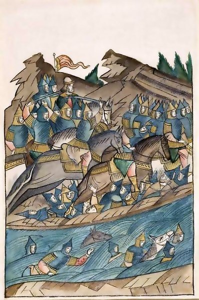

В прошлом выпуске гражданин Арапша давал прикурить объединенным русским войскам. Как уже писалось ранее, Мамай, обрадованный такой решительной победой, засобирался было на Русь, но, проверив ситуацию на других фронтах, отложил свое участие в празднике.

С юга ползли неприятные слухи о юноше бледном со взором горящим, который во главе огромной армии прет к Сараю и захватывает все на своем пути, не особо считаясь с потерями. Решив, что это будет поважнее каких–то там русских, которых осталось лишь добить, Мамай остался в своих землях, с тревожным интересом наблюдая за происходящим на юге и прикидывая, скольких его конкурентов Тохтамыш прибьет, прежде чем доползет–таки до столицы.
Поэтому вместо самого хан–продюсера во главе монгольского войска встал Бегич – еще один подручный Мамая. Арапша, так лихо набедокуривший годом ранее, судя по косвенным данным, был послан в Сарай – со свойственным ему огоньком разбираться с проблемами на местах.
Бегич не был столь креативен и нагл, поэтому на Русь шел неторопливо, взвешивая и прикидывая все шансы. Дойдя до реки Вожа, что в Рязанской области, татарский командир встал и озадаченно почесал шлем. Русские, во главе с Дмитрием Ивановичем (все еще не Донским), заняли крайне выгодную позицию на противоположном берегу, укрепившись на холме и заблокировав единственный брод. Паромов поблизости не было, до изобретения транспортной авиации осталось лет семьсот. Перебегать через реку под русскими стрелами Бегичу как–то не хотелось, возвращаться к Мамаю с рассказом вида «не вышло, начальника!» – тоже не прельщало.
Русские на холме веселились и показывали через реку оскорбительное. Татары мялись и краснели, словно гимназистки на сельской дискотеке. Решение сложной дилеммы: «что лучше – погибнуть прямо сейчас или потом?» не давалось монгольскому командиру несколько дней. Возможно, Бегич сильно горевал об отсутствии не только вертолетов, но и сотовой связи – позвонить Арапше и спросить, что бы он сделал в этой ситуации, было бы крайне кстати.
В итоге Диме откровенно надоело зрелище стеснительных татар на том берегу, и он отдал приказ отойти от брода. Войско, зазывно улыбаясь, освободило переправу и отошло к холму. Монголы подождали еще немного, а потом у Бегича все же сдали нервы, и он пошел в решительную атаку.
Вообще, надо сказать, у татар с тактикой и стратегией все было в порядке, что могут подтвердить многие народы – от китайцев до поляков. Десятки и сотни военачальников покупались на стандартные монгольские приемы типа ложного отступления, внезапных ударов с флангов, да и просто «карусели», когда тысячи всадников постоянно обстреливают врага из луков, находясь вне пределов его досягаемости. Но в данном конкретном случае в измученном неуверенностью мозгу Бегича что–то перемкнуло, и он выбрал прямую лобовую атаку, изысканную, как удар поленом и примерно столь же тупую. В начале 21–го века такая тактика получила название zerg rush.
Через какое–то время беспощадной бойни монголы начали кончаться, а русские продолжали стоять. Опечаленные таким поворотом событий татары побежали назад, в надежде на свисток судьи и второй раунд. Однако сзади не было рефери и удобного стула в синем углу ринга – там была только река.
Так монголам пришлось сдавать зачет по плаванию, подобно русским годом ранее. Выяснилось, что с этим видом спорта был мало знаком не только княжич Иванушка, но и Бегич.
Довольный Дима на следующее утро взял татарский обоз и отбыл восвояси, рассказывая всем прохожим о победе над считавшимися до того неуязвимыми татарами. Население Руси, узнавшее, что орда желтых товарищей на коренастых лошадках вовсе не гнев божий, а обычные люди, злорадно посмеивалось и бралось за топоры.
Мамаю было не до злорадного смеха. Тохтамыш рвался к Сараю, снося все на своем пути, войска хан–продюсера таяли, а тут еще дурень Бегич полностью потерял свою армию. Затейливо ругаясь по поводу ситуации в мире, Мамай собрал все, что осталось, закупил наемников, договорился с союзниками и пошел на север сам, на этот раз уже не доверяя никому.
Рядом с Доном, в районе устья Непрядвы, была одна примечательная полянка. И именно про нее будет следующий выпуск.